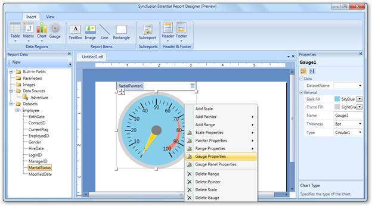
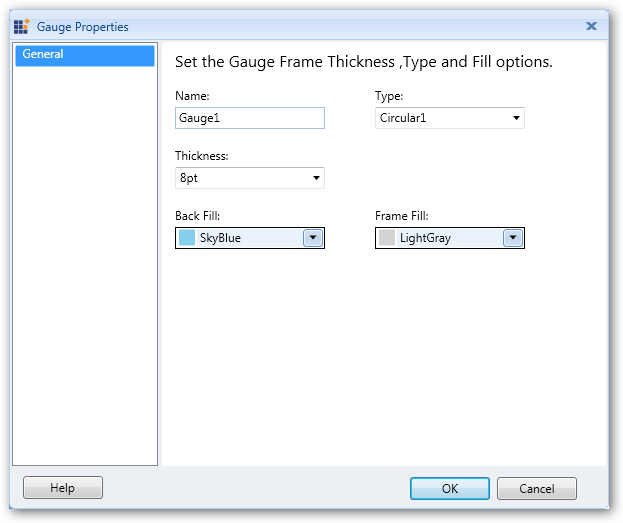
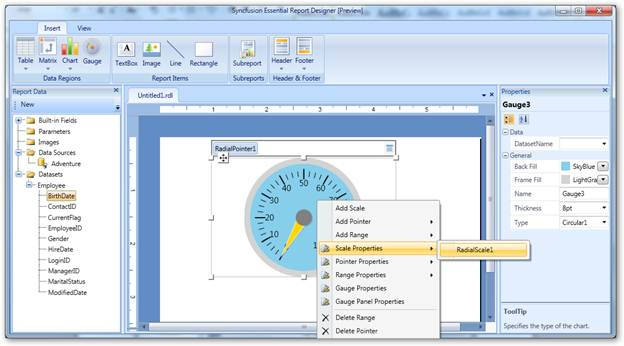
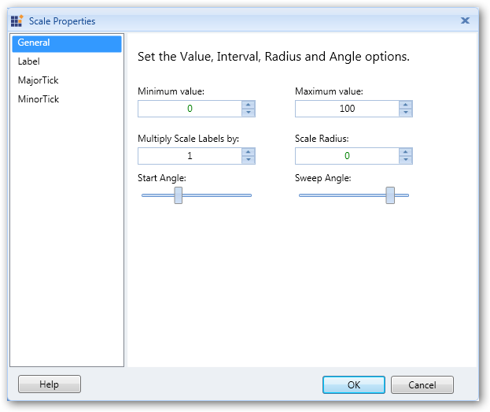
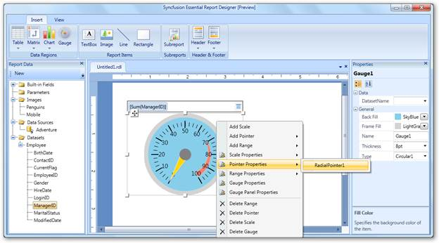
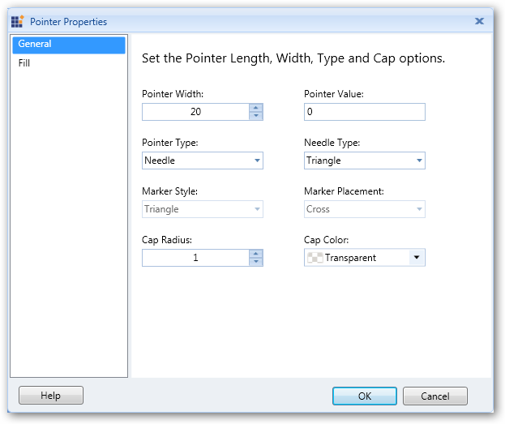
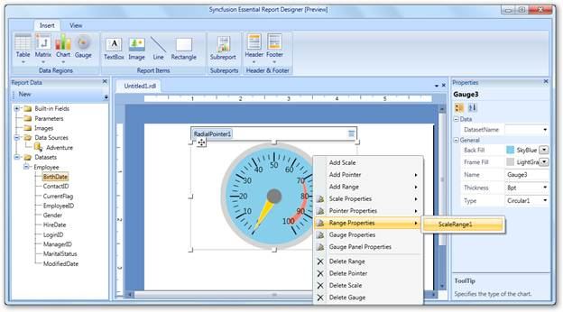
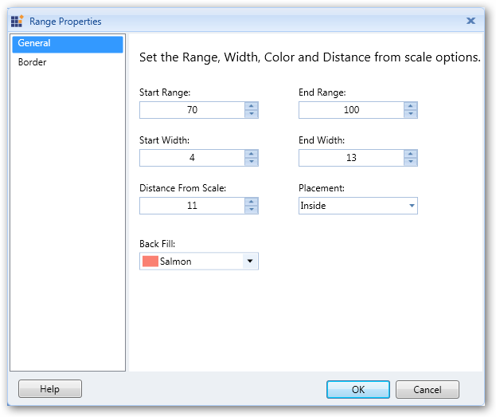
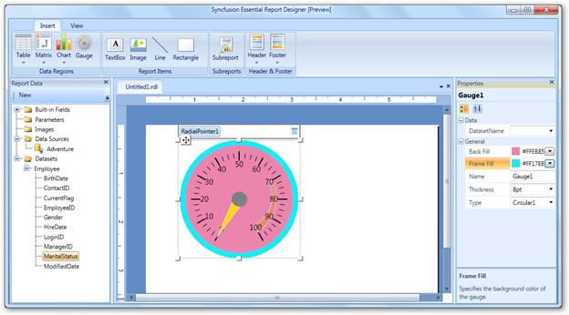

The following are the steps to apply styles to the gauge:
1. Right-click on the gauge and select Gauge Properties.

Figure 73: Gauge Properties
2. In the Gauge Properties dialog, click General and set the desired values to the fields.

Figure 74: Gauge Properties Dialog
3. Click OK.
4. To change the scale properties of gauge, right-click on the gauge and navigate to Scale Properties > RadialScale1.

Figure 75: Scale Properties
5. In the Scale Properties dialog, select any of the following:
· General to change minimum value, maximum value, radius, start angle, and sweep angle of the scale.
· Label to set the placement of the label, label distance from the scale, font size, font color, and font angle of the labels.
· MajorTick to set length, width, shape, color, and placement of the major ticks.
· MinorTick to set length, width, shape, color, and placement of the minor ticks.

Figure 76: Scale Properties Dialog
6. Click OK.
7. To change the pointer properties of the gauge, right-click on the gauge and navigate to Pointer Properties > RadialPointer1.

Figure 77: Pointer Properties
8. In the Pointer Properties dialog, select any of the following:
· General to change the width, value, pointer type, needle type, marker style, marker placement, cap radius, and cap color of the pointer.
· Fill to set the background color, border color, and border width of the pointer.

Figure 78: Pointer Properties Dialog
9. Click OK.
10. To change the range properties of the gauge, right-click on the gauge and navigate to Range Properties > ScaleRange1.

Figure 79: Range Properties
11. In the Range Properties dialog, select any of the following:
· General to change the start range, end range, start width, end width, placement, and background color of the gauge range.
· Border to set the border width and border color of the gauge range.

Figure 80: Range Properties Dialog
12. Click OK.
 Note: You can also change the gauge properties
via the Properties grid by clicking on the gauge. It will display the Properties
grid at the right of the Report Designer.
Note: You can also change the gauge properties
via the Properties grid by clicking on the gauge. It will display the Properties
grid at the right of the Report Designer.
After setting the Back Fill and Frame Fill properties with the following values through the Properties grid, the gauge will look like this:

Figure 81: Seting Styles to Gauge through Properties Grid